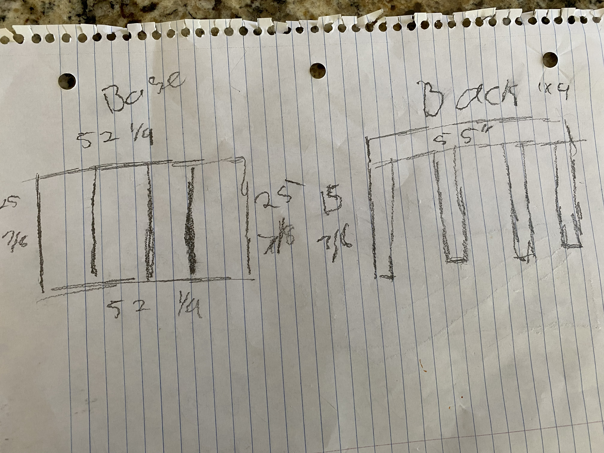

Porch Swings
The Challenge
My mom saw a Pinterest post about a porch swing and wanted one. My dad, being a carpenter, said he could build it, but he put me in charge of the design since he knew I’m into engineering. We had a few constraints: it had to be big enough for three people, strong enough to support more than their combined weight, and built to swing safely. We also wanted it to look nice and match the style of our porch.

The Research
The swing had to be designed to fit a cushion, because it’s way more comfortable to sit on something couch-like than on a hard bench. We chose a baby crib mattress size, 52" long by 28" wide, so we designed the swing around those dimensions. I also researched different types of wood and fasteners to make sure the swing would be sturdy and safe. I looked at several designs online for inspiration, but we ultimately created our own design to match our specific needs and style.

Developing Solutions
I shared my ideas with my dad, and with his knowledge, he helped me figure out what to change, which ideas were solid, and the best way to approach the build. He helped me construct it, and we made a few adjustments along the way. Time to paint!

Final Project & Reflection

After the swing turned out great, my mom’s friends started asking where she got it. That gave me the idea to make more and sell/install them for people. It turned into a great side hustle, and I made over $2,500. Through this process, I learned a lot about efficient manufacturing and how to market a product. If I did this again, I’d focus even more on advertising to reach more people.